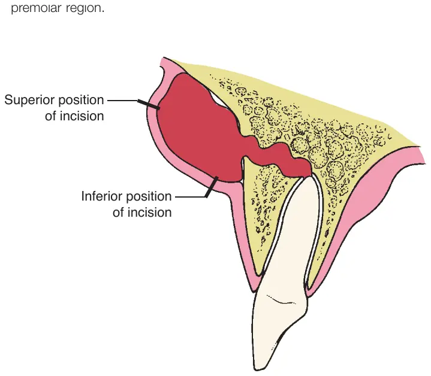

نسخه استخراجشده؛ ترجمه یا تأیید علمی انجام نشده است. وضعیت: captured
اصل ششم مدیریت عفونت اودنتوژنیک: آنتیبیوتیک مناسب را انتخاب و تجویز کن — و نخستین پرسشش این است که اصلاً لازم است یا نه.
هرگاه درمان آنتیبیوتیکی در نظر گرفته میشود، درمانگر باید خطرها و فایدهها را با دقت بسنجد.

و سه عامل اصلی که باید در تعیین مناسب بودن آنتیبیوتیک کمکی در نظر گرفته شوند:
دو تا از این سه را در یونیت پیشین شناختی — شدت (اصل یک) و میزبان (اصل دو)؛ سومی، توانایی انجام جراحی، تازه است.
عفونتهای شدید، بهویژه آنها که فضاهای فاشیال عمیقتر را درگیر میکنند یا با سلولیت همراهاند، پس از کنترل منشأ و تخلیهی کامل از آنتیبیوتیک سود میبرند؛ فضای عمقی را بدون CT نمیتوان کامل وارسی کرد و خطر تخلیهی ناقص در آن بیشتر است. موارد مناسب دیگر: تورم فراتر از زائدهی آلوئولار، تریسموس، لنفادنوپاتی، تب بالاتر از ۳۸٫۳ درجه، پریکورونیت شدید، استئومیلیت، و بیمار با نقص ایمنی (همراه با درمان جراحی مناسب).
و اگر عفونت حاد اجازهی کنترل منشأ و تخلیه را ندهد — مثلاً پریکورونیت شدید با محدودیت باز شدن دهان از درد — آنتیبیوتیک تجربی گاهی پیش از جراحی میآید تا دهان باز شود و جراحی ممکن شود.
و دو مثال مهم از موقعیتهایی که آنتیبیوتیک در آنها لازم نیست: پریکورونیت خفیف، و آبسهی تخلیهشدهای که به زائدهی آلوئولار محدود است. درخواست بیمار، درد شدیدی که از عفونت نیست، دنداندرد، پریودنتیت یا آبسهی پریاپیکال، دراسکت، و تجویز پس از کشیدن چند دندان در بیمار با ایمنی سالم هم دلیل تجویز نیستند.
ببین منطق چقدر ساده است: اگر منشأ حذف شده، عفونت تخلیه شده، محل سطحی است و میزبان سالم است — کاری برای آنتیبیوتیک باقی نمیماند.
اتکای بیش از حد به آنتیبیوتیک، فهرستی از خطرها دارد:
و همان جملهی کلیدی، دوباره: باید بهروشنی فهمید که آنتیبیوتیکها همیشه باید بهعنوان مکمل مدیریت جراحی در نظر گرفته شوند، نه جایگزین آن.
و یک یافتهی پژوهشی که شاید غافلگیرت کند: مرورهای نظاممند نشان میدهند که انتخاب آنتیبیوتیک، هنگامی که همراه با درمان جراحی (کنترل منشأ و برش و تخلیه) به کار رود، بهطور معناداری بر نتایج درمان اثر نمیگذارد.
یعنی وقتی جراحی درست انجام شده باشد، اینکه کدام آنتیبیوتیک را انتخاب کردهای، تفاوت معناداری نمیسازد. و این دقیقاً نشان میدهد که کدام بخش درمان واقعاً کار میکند.
و پیامد عملی این یافته: انرژیات را صرف انتخاب «بهترین» آنتیبیوتیک نکن؛ صرف اطمینان از کامل بودن جراحی کن.